2.1.3. Lab – Paths¶
In this section, edit the policy using Visual Policy Editor to enable users to login via AD+MFA, then transition to CertSSO
2.1.3.1. Task – Open Visual Policy Editor¶
- On the CERT_SSO profile line click edit under Per-Session Policy
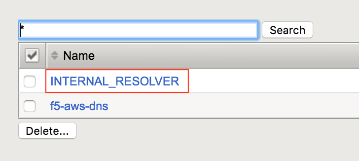
- Click the + symbol located on the fallback branch located between the Start and Deny boxes
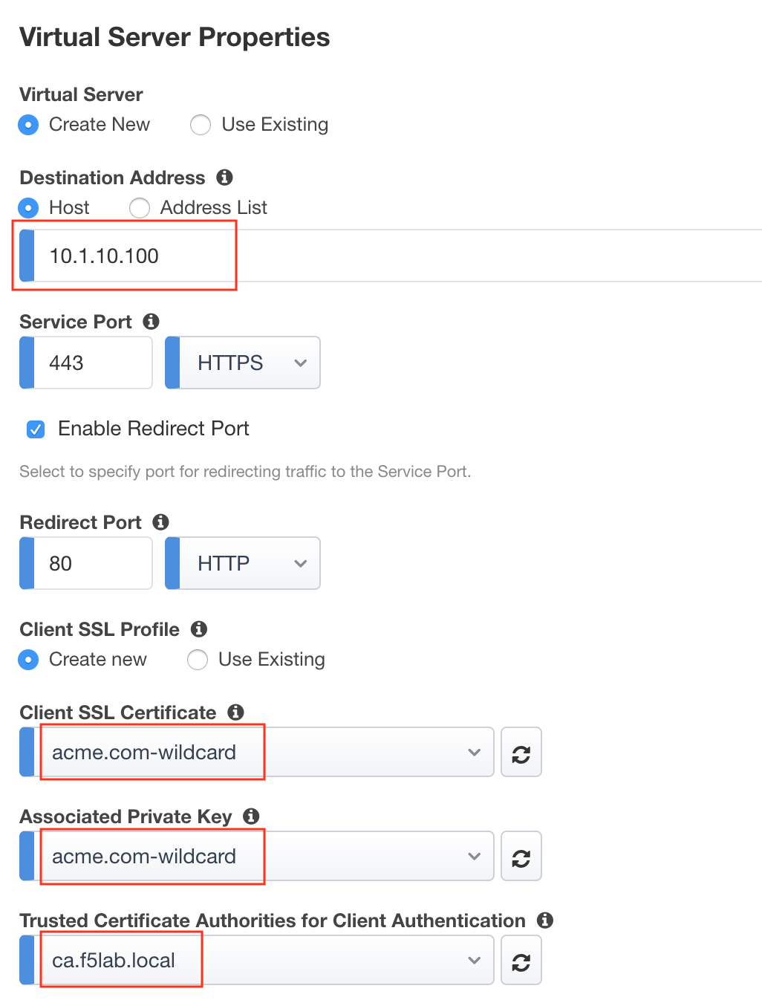
- Select Logon Page under the Logon Tab
- Click Add Item
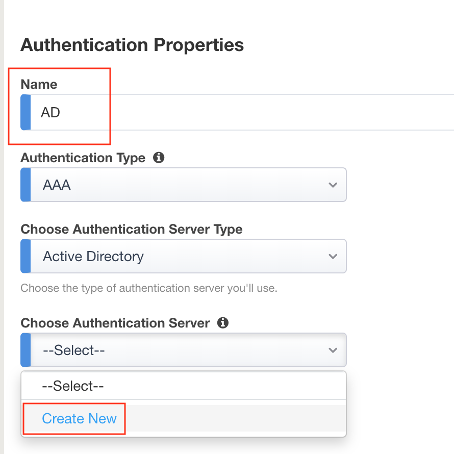
- Add an additional field to the logon page by selecting **password ** from the Type dropdown on line 3
- Enter OTP for Post Variable Name
- Enter OTP for Session Variable Name
- Enter OTP for Logon Page Input Field #3
#. Click Save 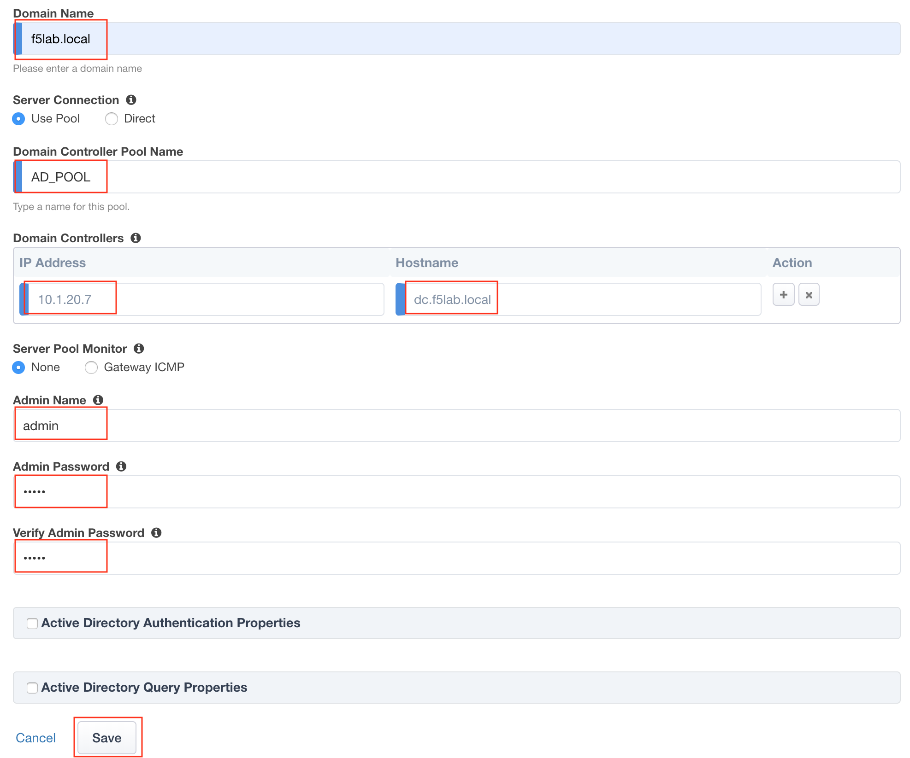
- Click the + symbol located on the fallback branch located between the Logon Page and Deny boxes
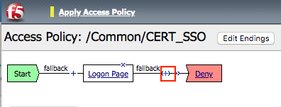
- Select RADIUS Auth under the Authentication Tab
- Click Add Item
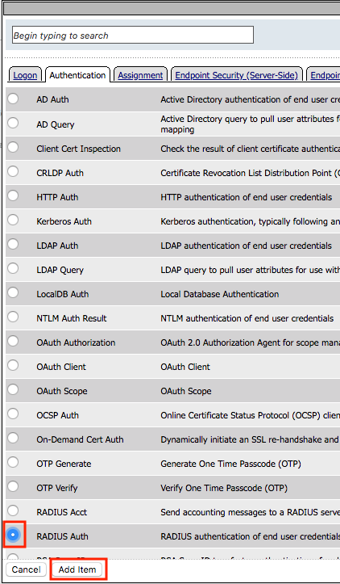
- Select RADIUS_SERVERS from the AAA Server dropdown box
- Change the password source to %{session.logon.last.OTP}
- Click Save
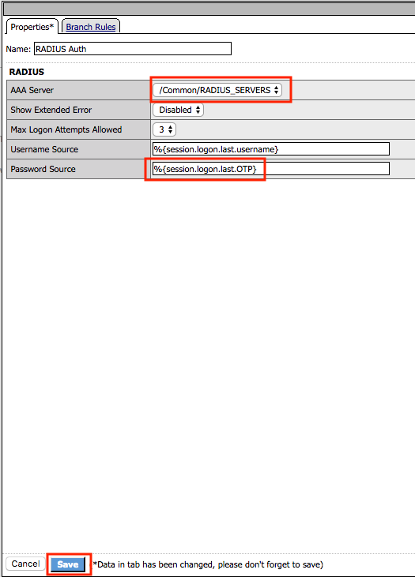
- Click the + symbol located on the Successful branch located between RADIUS Auth and Deny boxes
- Click Add Item
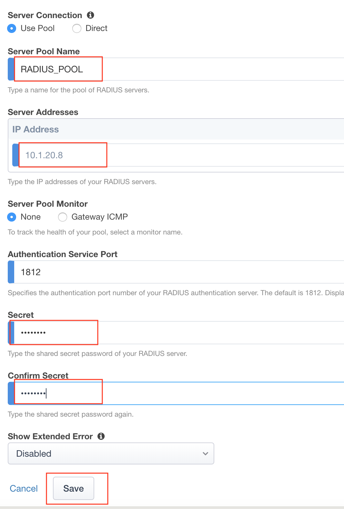
- Select AD Auth under the Authentication Tab
- Click Add Item

- Select f5lab.local from the Server dropdown box
- Click Save
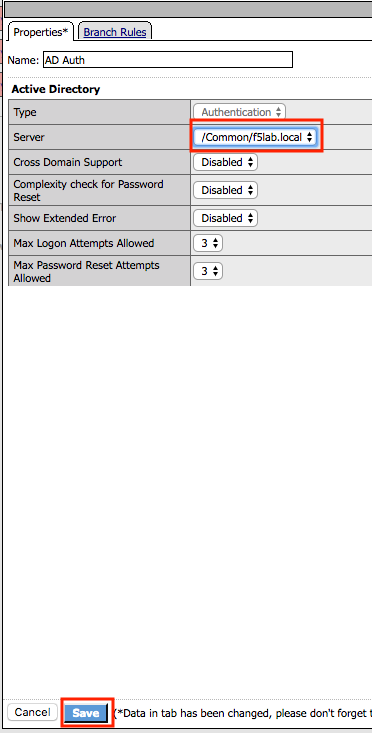
- Click the + symbol located on the Successful branch located between AD Auth and Deny box
- Click Add Item

- Select Variable Assign under the Assignment Tab
- Click Add Item
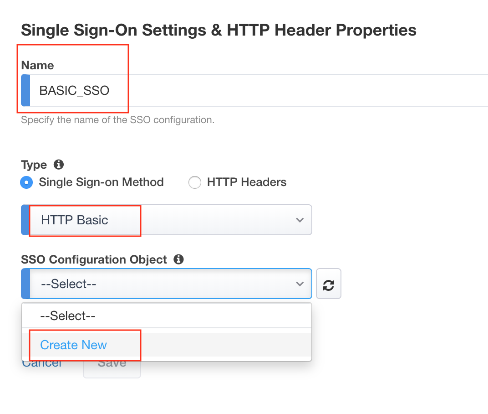
- Click the Deny ending icon located on the fallback branch of the Variable Assign Agent
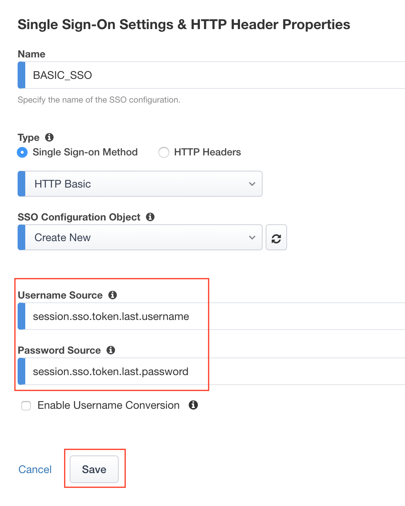
- Click Allow
- Click Save
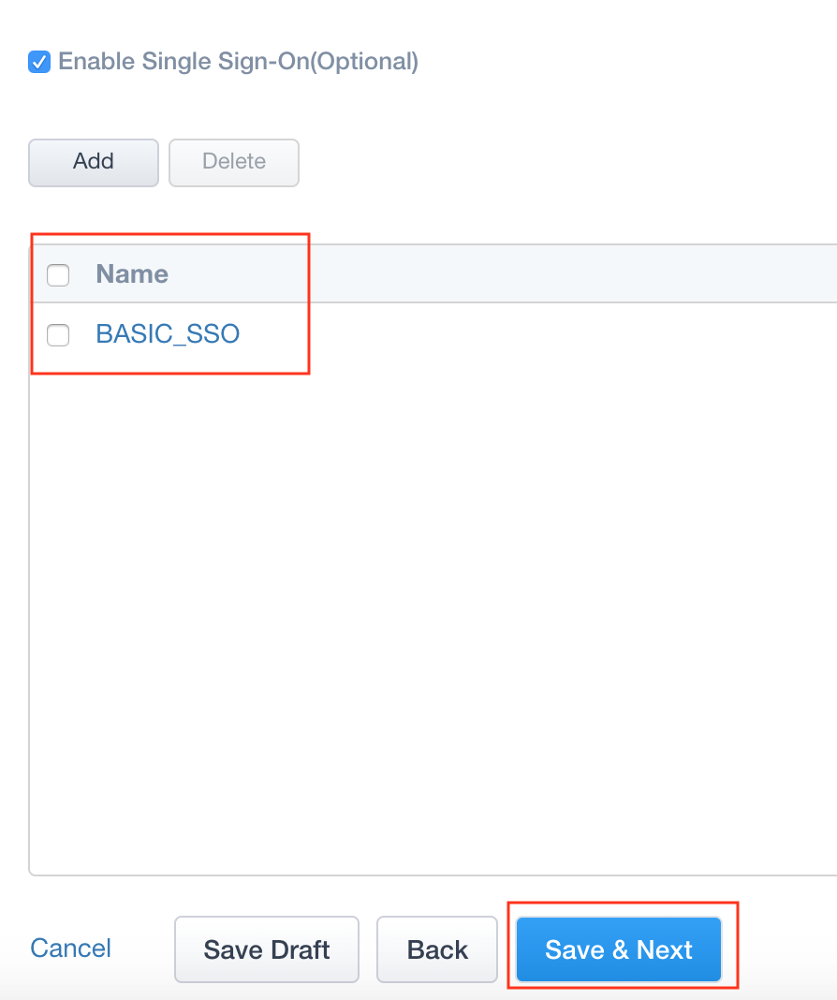
- Apply Access Policy located in the top left corner to commit the policy changes